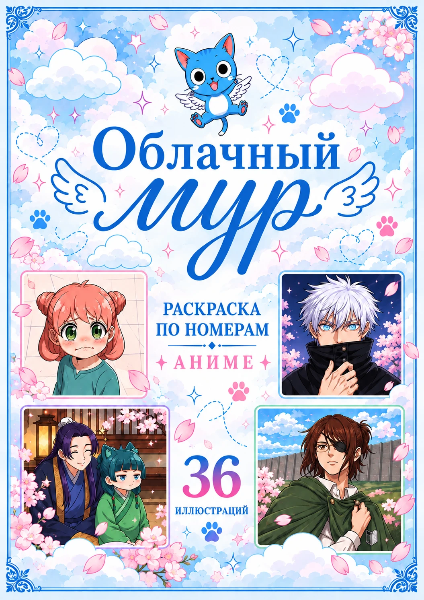
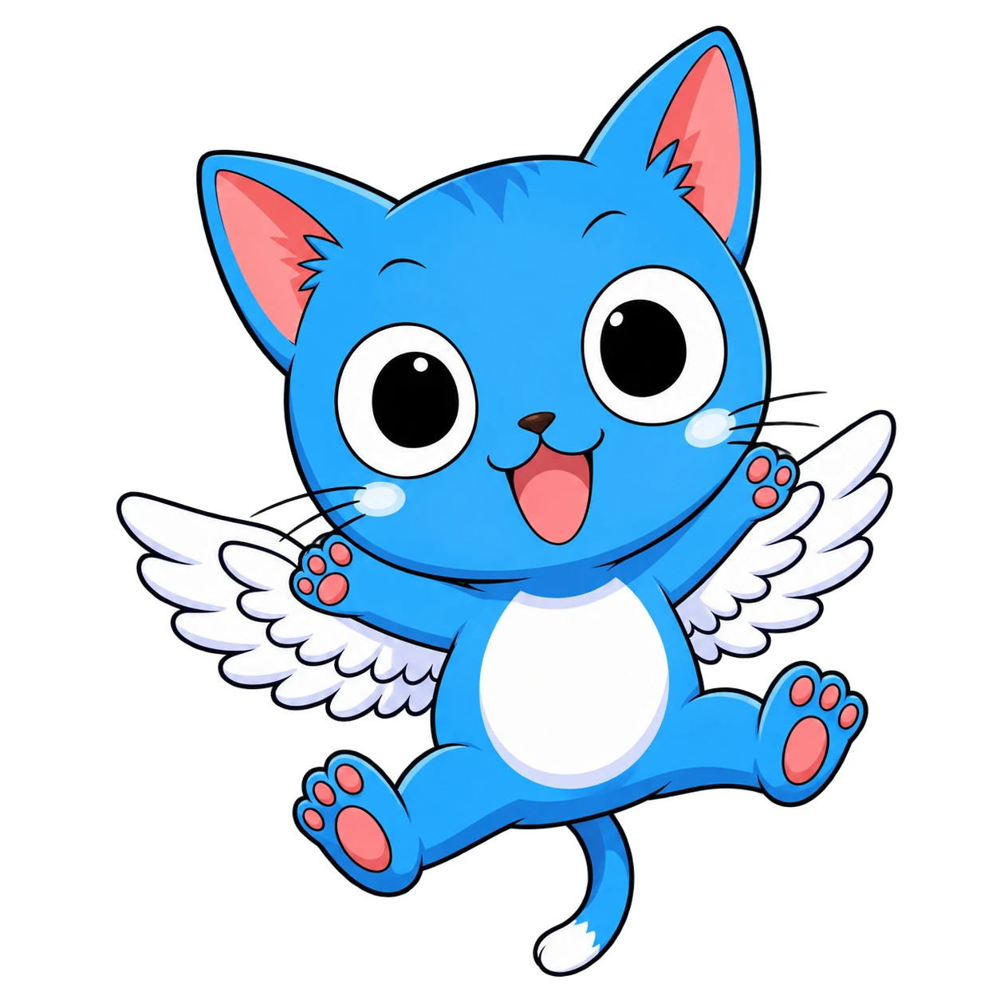
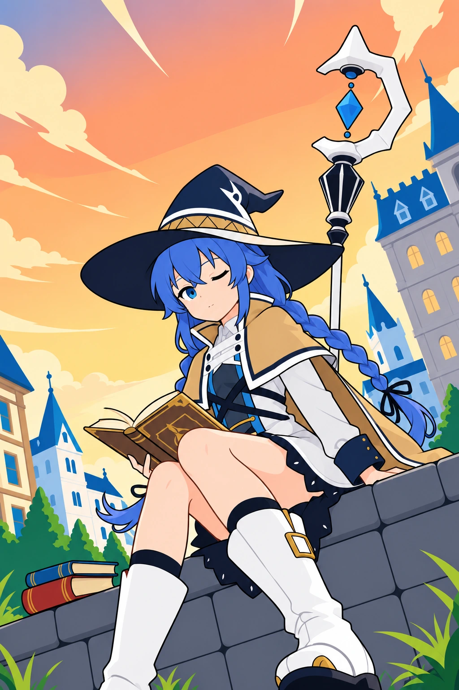

Твой маленький
мир большого
вдохновения.
Любимые истории, цветные пальцы и вечер, который хочется оставить себе.
на каждой странице ♡


ПЕРВЫЙ ВЫПУСК36 историй в цвете
У каждой страницы —
своё настроение
От нежной романтики до маленького волшебства. Вот несколько работ из первого выпуска.
Всего в выпуске — 36 иллюстраций. Здесь лишь маленькая часть будущей раскраски.

вечер для себяМожно просто
выдохнуть.
И начать с цвета.
Не обязательно уметь рисовать. Выбирай цвет по номеру и смотри, как из отдельных участков постепенно появляется целая история.
36 аниме-иллюстраций
Разные герои и настроения в одном выпуске.
Раскрашивание по номерам
Понятный ориентир для каждого цвета.
Проект, который растёт с любовью
Новые страницы и процесс создания — в Telegram.
Оставь место
для маленького чуда
Готовим «Облачный мур» примерно к Новому году.
Хочешь раскраску из первой партии? Напиши нам в Telegram.
Будем ждать тебя в Telegram
Показываем новые иллюстрации, делимся процессом
и вместе ждём первый выпуск.
Пара вопросов
Когда будет готова раскраска?
Ориентируемся на Новый год — начало 2027 года. Точную дату и новости подготовки опубликуем в Telegram.
Как забронировать первый выпуск?
Нажми «Хочу забронировать», скопируй подготовленное сообщение и отправь его в Telegram. Бронь будет оформлена после личного подтверждения.
Сколько иллюстраций будет внутри?
В первом выпуске планируется 36 иллюстраций в аниме-эстетике. В галерее можно посмотреть цветные примеры и незакрашенные страницы.
Какие будут цена, бумага и доставка?
Эти детали ещё уточняются. Расскажем о них в канале до подтверждения бронирования.